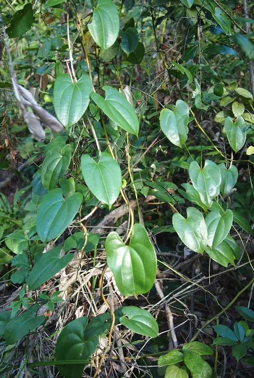

Long yam
Long yam is a root or shoot you can forage from April to September in Tropical north and Subtropical east coast. Twining rainforest-edge vine with shiny heart-shaped leaves; long, thin tubers.

When is long yam in season in Australia?
Long yam is usually in season April to September. Timing shifts with weather, latitude and altitude.
Where does long yam grow in Australia?
Long yam grows in New South Wales, Northern Territory, Queensland, Western Australia. Regions: Tropical north, Subtropical east coast.
How do you recognise long yam?
Twining rainforest-edge vine with shiny heart-shaped leaves; long, thin tubers.
How do you harvest long yam?
Only dig roots where you have the landowner's permission, since uprooting wild plants is illegal in many places. Take a few from a large patch and backfill the hole.
How do you eat long yam?
Tubers roasted or boiled; eaten raw by some, but cooking is safest.
How do you store long yam?
Store roots.
What is long yam good for?
Calories.